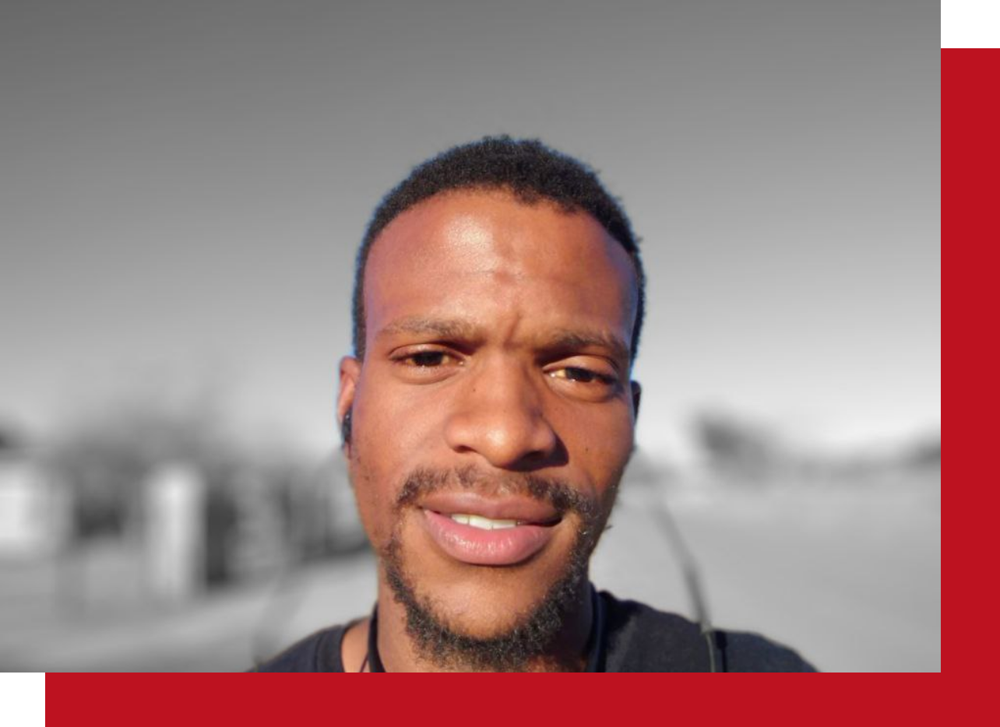

My Story
Hello! I'm Thabo, and what started as a fascination with how websites are built has evolved into something deeper — a passion for understanding how the networks that power them actually work.
My journey began in front-end development, where I spent countless hours crafting digital experiences and marvelling at the web's ability to inform, connect, and inspire. But the more I built, the more I found myself asking a different question: not how do I display this, but how does this data actually get here? That curiosity pulled me toward networking — and I haven't looked back.
Today, I'm channelling that same drive and attention to detail into network administration, routing and switching, and cloud networking. I've built hands-on labs in Azure, configured Cisco networks in Packet Tracer, and practised real-world troubleshooting in my home lab — because I believe the best way to learn a network is to build one, break it, and fix it yourself.
I'm based in Johannesburg and actively working toward a junior network administration role, with a focus on routing, switching, and cloud infrastructure. If you're looking for someone who is technically curious, self-driven, and genuinely excited about building reliable networks — let's connect.

My Learning Journey
Learn More About Me
The key areas that have shaped my networking skills and career transition.
My Skillset
My Toolbox
Network administration is about both technical precision and clear communication. Here's what I bring.
Get In Touch
Let's collaborate
Open to junior network admin roles, IT support with networking scope, and cloud networking positions in Johannesburg — on-site, hybrid, or remote.